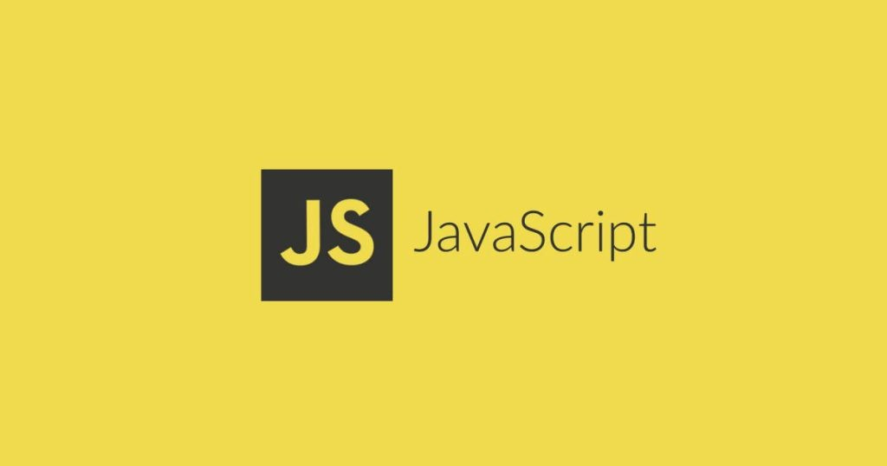
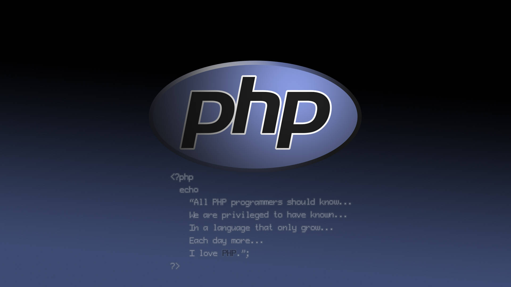

Web tasarımına yeni başlayanların biraz araştırma yaptıktan hemen sonra ilk tanıştıkları ve
en sık karşılaştıkları konu şüphesiz ki HTML‘dir. Buda HTML’in, web tasarımının en temel taşı olmasındandır.
Sosyal ağ gruplarında ve forumlarda HTML ile ilgili bir çok soru görmekteyiz. HTML nedir?, HTML bir yazılım dili
midir?, HTML ile neler yapılabilir?, HTML ile site yapmak mümkün müdür? gibi bir çok konu üzerinde
tartışılmaktadır.
Peki nedir bu HTML? HTML hakkında merak edilen tüm soruların cevapları, doğru ve yanlış bilinenler için yazının
devamını okuyabilirsiniz.
HTML (Hyper Text Markup Language) yani web sayfalarını oluşturmak için kullanılan standart metin işaretleme
dilidir. Buradan çıkaracağımız sonuç şudur ki HTML bir programlama dili değildir. Biraz daha açıklamak
gerekirse, HTML, Chrome, Yandex Browser, Firefox, Opera, Safari gibi web tarayıcılarının okuyup anladığı bir
dildir. Tarayıcılar HTML çıktıyı okurlar ve bizlere web sitesini çalıştırırlar.
HTML (Zengin Metin İşaretleme Dili) internet üzerinde web sayfası oluşturmak için kullanılan bir betik dilidir.
HTML dosyaları .html ya da .htm uzantısı ile saklanır. HTML, W3C tarafından standartlaştırılmaktadır.
ASP, ASP.net, PHP, Java, Phyton gibi günümüzde sıklıkla kullanılan yazılım dilleri ile geliştirilen web
projelerinin hepsinin ortak noktası HTML’dir. Web projesi hangi yazılım dili ile geliştirilirse geliştirilsin,
sonunda HTML olarak tarayıcıya yazılır ve tarayıcı bu HTML çıktıyı okur.
Tarayıcınızda bir web sayfası görüntülerken Sağ tık > Sayfa Kaynağını Görüntüle dediğinizde karşınıza gelen
kodlar HTML’dir.
Html dili bize temel olarak, yazı, görsel ve video gibi öğeleri sayfa içersine yerleştirme ve konumlandırma, bu
sayfaların web tarayıcılarında düzgün şekilde görüntülenmesi, arama motorlarına sayfa hakkında bilgi verme gibi
işlemleri gerçekleştirir.
HTML ile bir sayfanın iskeleti oluşturulur ve bu iskelet CSS (cascading style sheet) ve Javascript yardımı ile
şekillendirilir. CSS nedir , JavaScript Nedir? diye merak edenler temel web tasarım dersleri yazı dizimizin
devamını okuyabilirler.
HTML bir web sayfasının içerik katmanıdır.
Bir siteye girdiğimiz zaman bize görüntülenen ilk sayfa index.html, index.htm, index.asp,
index.php ya da default.htm dosyalarından birisidir. index.* dosyaları UNIX ve türevi sunucu sistemler için,
default.htm dosyası ise WinNT ya da türevi sistemler için giriş sayfası olur.

1980 yılında CERN’de görevli olan Tim Berners-Lee, CERN araştırmacılarının bilgilerini ve
dökümanlarını birbirleriyle paylaşabilmeleri için bir sistem olması gerektiğine inanıyordu. Bu yüzden prototip
olarak ENQUIRE isimli sistemi önerdi.
1989 yılına gelindiğinde internet tabanlı sistemin ilk temellerini yine aynı isim Tim Berners-Lee attı. 1990
yılında HTML işaretleme dilini geliştirmesinden sonra World Wide Web(WWW) sistemini kurdu. Bu şekilde CERN’de
bilgi paylaşımını kolaylaştırma amacı doğrultusunda ortaya çıkan HTML günümüzde hayatımızın vazgeçilmezi olan
internetin başlıca temelini oluşturmuştur.
HTML 1.0 – 1991
HTML‘in ilk sürümü 1991 yılında yayınlandı. Zamanla çok yetenekli olacak olan HTML, henüz 1.0 iken ilk sürüm
olmasından kaynaklı çok kısıtlı özelliklere sahipti. Bundan dolayı bu sürüm ile oluşturulan sayfalarda oldukça
basitti. Başlıklar, listeler ve paragraflar bu sürümün vazgeçilmez özellikleriydi.
HTML 2.0 – 1994
1994 yılında HTML 2.0 sıfır yayınlandı. Bu sürümde geliştirilmeye devam eden HTML, günümüzde sıkça kullandığımız
doldurulabilir form özelliğini kazandı.
HTML 3.2 – 1997
HTML 3.2 adı verilen üçüncü sürüm 1997 yılında yayınlandı. Tarayıcıya özel etiket kullanma sistemi getirildi ve
o gün bu gündür tarayıcı uyumsuzlukları oluşmaya devam etti. Ancak en önemlisi CSS bu sürüm ile beraber geldi ve
HTML artık daha yakışıklı olmaya başladı.
HTML 4.0 – 1999
HTML 4.0 ile önceki sürümlerde var olan gereksiz kodlar kaldırıldı. Söz dizimi açısından HTML’in en iyi
standartlarına gelindi. HTML’in geldiği bu nokta artık web sitelerinin çoğalmasına imkan sağlamaya
başladı.
HTML 5 – 2011
HTML5 standartları ile HTML artık harika bir hal aldı. Şuan kullanmakta olduğumuz bu sürüm, günümüz
teknolojisindeki tablet, mobil gibi cihazlarla uyum içinde çalışan ve çok daha fazla özelliğe sahip olmuş, arama
motoru dostu haline gelmiş bulunmaktadır.
HTML açılımı Hyper Text Markup Language Türkçesi ise Hiper Metin İşaretleme Dili’dir. CSS
ise Cascading Style Sheets Türkçesi Basamaklı Biçim Sayfaları’dır. Web Programlama ve Tasarlama’ya ilgi
duyanların veya yeni başlayanların ilk duyduğu kavramların başında HTML ve CSS gelir. Bu iki işaretleme dili
temelde kullanıcı ile web sitesi arasında bağlantıyı sağlayan Kullanıcı Arayüzünü(UI — User Interface)
oluşturur.
HTML ve CSS ile yazmış olduğumuz kodlar her tarayıcı bulunan HTML,CSS Çözümleyici (Html,CSS Solver) ile
çözümlenerek bizim arayüzümüze görsel bir şekilde aktarılmasına olanak sağlar. Yani girdiğimiz her bir site
aslında yazılmış koddan ibarettir ve biz istek gönderip kodları sunucudan alınca tarayıcımız aldığı kodları HTML
ve CSS çözücülerle görsel bir tabana oturtup bizimde sayfanın tasarımı güzelmiş dediğimiz yapısına büründürür.
Aslında bizim girdiğimiz websitelerinde bazı yerleri göremememiz sunucudan kaynaklandığı gibi çözümleyicimizdeki
versiyon eskiliğinden de olabileceği anlaşılmaktadır(Internet Explorer ile Google Chrome arasındaki kullanıcı
deneyimi farkı gibi). Peki bu iki yapı tanım dışında kullanımda nedir ve nerede kullanılır?
CSS ise HTML ile yerleştirdiğimiz etiketli verilerin tasarımlarıyla uğraşma, değiştirme fırsatı veriyor. Yani
biz tablo oluşturduk table etiketi ile fakat biz bunun tasarımını değiştirmek istiyoruz veya bir paragraf var
elimizde Bu isteğimizi ise CSS ile gerçekleştirebiliyoruz. Bunun örneğini ise yukarıdaki kod örneğinde
etiketlerin içine yorum satırlarında yazdığım kodları eklersek bu sefer farkı göreceksiniz. Bu font ailesini,
renk ve boyutunu, çerçeve ve uzaklık gibi kavramların kodlarını nereden bulabilirim diye sorarsanız bunun için
bütün tanımlı kodları anlatan bir web sitesi var onun da linkini aşağıya bıraktım.

JavaScript[10] (genellikle JS olarak kısaltılır), HTML ve CSS ile birlikte World Wide Web'in temel
teknolojilerinden biri olan programlama dilidir.[11] Web sitelerinin %97'sinden fazlası, web sayfası hareketleri
için istemci tarafında JavaScript kullanırlar [12] ve kullanılan kodlar genellikle üçüncü taraf kitaplıkları
içerir.[13] Tüm büyük web tarayıcılarında, kaynak kodunu kullanıcıların cihazlarında yürütebilmek için özel bir
JavaScript motoru bulunur.
JavaScript, ECMAScript standardına uyan, genellikle eş zamanlı olarak derlenmiş, üst düzey bir dildir.[14]
Dinamik yazma, prototip tabanlı obje yönelimi ve birinci sınıf işlevlere sahiptir. Olay odaklı, işlevsel ve
zorunlu programlama stillerini destekleyen çoklu paradigmadır. Metin, tarihler, düzenli ifadeler, standart veri
yapıları ve Belge Obje Modeli (DOM) ile çalışmak için uygulama programlama arayüzlerine (API'ler) sahiptir.
ECMAScript standardı, ağ oluşturma, depolama veya grafik olanakları gibi herhangi bir giriş/çıkış (I/O) içermez.
Pratikte, web tarayıcısı veya diğer çalıştırma ortamları, I/O için JavaScript API'leri sağlarlar.
JavaScript motorları başlangıçta yalnızca web tarayıcılarında kullanılıyordu, ancak günümüzde bazı sunucuların
ve çeşitli uygulamaların da temel bileşenleridir. Bu kullanım için en yaygın çalışma zamanı sistemi Node.js'dir.
Java ve JavaScript'in ad, sözdizimi ve ilgili standart kitaplıklar açısından benzerlikleri olsa da, iki dil
birbirinden farklıdır ve tasarım açısından da büyük farklılıklar gösterir.
Grafik kullanıcı arayüzüne sahip ilk web tarayıcısı Mosaic, 1993 yılında piyasaya sürüldü.
Teknik bilgisi olmayan kişilerin erişebildiği, yeni ortaya çıkan World Wide Web'in hızlı büyümesinde önemli bir
rol oynamıştır. Mosaic'in önde gelen geliştiricileri daha sonra 1994'te daha parlak bir geleceği olduğu
düşünülen Netscape Navigator tarayıcısını piyasaya süren Netscape şirketini kurdular. Netscape Navigator hızla
en çok kullanılan tarayıcı haline geldi.
Web'in yeni şekillenmeye başladığı bu yıllarda, web sayfaları yalnızca statik olabilirdi ve sayfa tarayıcıya
yüklendikten sonra dinamik davranış yeteneğinden de yoksundu. Gelişen web geliştirme sahnesinde,
programlamacıların bu sınırlamanın kaldırılmasına yönelik istekleri vardı, bu nedenle 1995'te Netscape,
Navigator'a bir komut dosyası dili eklemeye karar verdi. Bunu başarmak için iki yol izlediler: Java programlama
dilini yerleştirmek için Sun Microsystems ile iş birliği yaparken, aynı zamanda Scheme dilini yerleştirmek için
de Brendan Eich'i işe aldılar.
Netscape yönetimi kısa süre sonra Eich için en iyi seçeneğin Java'ya benzer ve daha az Scheme veya diğer mevcut
komut dosyası dillerine benzeyen yeni bir dil tasarlamak olduğuna karar verdi. Eylül 1995'te Navigator
beta'nın bir parçası olarak ilk sunulduğunda, eklenen yeni dil ve yorumlayıcı uygulaması LiveScript olarak
adlandırılsa da, Aralık ayında resmi sürüm için adı JavaScript olarak değiştirildi.
JavaScript adının seçimi, doğrudan Java ile ilgili olduğu imâ edilerek kafa karışıklığına neden oldu. O zamanlar
dot-com balonu patlamıştı ve Java henüz yeni bir programlama dili idi, bu nedenle Eich, JavaScript adını
Netscape'in bir pazarlama taktiği olarak gördü.
Microsoft, 1995 yılında Internet Explorer'ı piyasaya sürerek Netscape ile bir tarayıcı savaşına yol açtı. JavaScript cephesinde, Microsoft, JScript adlı kendi yorumlayıcısını oluşturmak için Navigator yorumlayıcısında tersine mühendislik yaptı.[20] JScript ilk olarak 1996'da, CSS için ilk ve HTML uzantıları ile birlikte piyasaya sürüldü. Bu uygulamaların her biri, Navigator'daki benzerlerinden belirgin şekilde farklıydı.[21][22] Bu farklılıklar, geliştiricilerin web sitelerinin her iki tarayıcıda da sağlıklı şekilde çalışmasını zorlaştırdı ve birkaç yıl boyunca "En iyi Netscape'te görüntülenir" ve "En iyi Internet Explorer'da görüntülenir" şeklinde logoların yaygın olarak kullanılmasına yol açtı
Kasım 1996'da Netscape, JavaScript'i Ecma International'a tüm tarayıcı satıcılarının
uyabileceği standart bir belirtimin başlangıç noktası olarak sundu. Bu, Haziran 1997'de ilk ECMAScript dil
spesifikasyonunun resmî olarak yayınlanmasına yol açtı.
Standartlar süreci, ECMAScript 2'nin Haziran 1998'de ve ECMAScript 3'ün Aralık 1999'da piyasaya sürülmesiyle
birkaç yıl boyunca devam etti. ECMAScript 4 üzerindeki çalışmalar ise 2000 yılında başladı.
Bu arada Microsoft, tarayıcı pazarında giderek daha baskın bir konuma geldi. 2000'lerin başında, Internet
Explorer'ın pazar payı %95'e ulaştı.[24] Bu durum, JScript'in Web'de istemci tarafı komut dosyası oluşturmak
için gerçek bir standart haline geldiği anlamını taşıyordu.
Microsoft başlangıçta standartlar sürecine katıldı ve bazı önerileri kendi JScript dilinde uyguladı, ancak
sonunda Ecma çalışması üzerinde iş birliğini durdurdu. Böylece ECMAScript 4 yenilmiş oldu.
2000'lerin başında Internet Explorer'ın hakimiyeti döneminde, istemci tarafı komut dosyası oluşturma yöntemi
oldukça durgundu. Bu, Netscape'in halefi Mozilla'nın Firefox tarayıcısını piyasaya sürdüğü 2004 yılında
değişmeye başladı. Firefox birçok kişi tarafından iyi bir şekilde karşılandı ve Internet Explorer'dan önemli bir
pazar payını kendisine aldı.[25]
2005 yılında Mozilla, ECMA International'a katıldı ve ECMAScript for XML (E4X) standardı üzerinde çalışmaya
başladı. Bu, Mozilla'nın bir ECMAScript 4 taslağına dayanan ActionScript 3 dilinde E4X'i uygulayan Macromedia
(daha sonra Adobe Systems tarafından satın alındı) ile ortak olarak çalışmasına yol açtı. Hedef, ActionScript
3'ü yeni ECMAScript 4 olarak standart hale getirmekti. Bu amaçla Adobe Systems, Tamarin uygulamasını açık
kaynaklı bir proje olarak yayınladı. Ancak, Tamarin ve ActionScript 3, yerleşik istemci tarafı komut dosyası
oluşturmaktan çok farklıydı ve Microsoft'un iş birliği olmadan, ECMAScript 4 hiçbir zaman istenen sonuçları
vermedi.
Bu arada, ECMA çalışmasına bağlı olmayan açık kaynak topluluklarında çok önemli gelişmeler yaşanıyordu. 2005'te
Jesse James Garrett, Ajax terimini türettiği ve verilerin arka planda yüklenebileceği web uygulamaları
oluşturmak için JavaScript'in omurgası olduğu bir dizi teknolojiyi tanımladığı ve tam sayfa gereksinimini
ortadan kaldırdığı bir WhiteBook yayınladı. Bu, açık kaynak kitaplıkların ve onların etrafında oluşan
toplulukların öncülük ettiği bir JavaScript rönesans dönemini ateşledi. jQuery, Prototype, Dojo Toolkit ve
MooTools dâhil olmak üzere birçok yeni kitaplık oluşturuldu.
Google, Chrome tarayıcısını 2008'de rakiplerinden daha hızlı olan V8 JavaScript motoruyla piyasaya
sürdü.[26][27] En önemli yenilik tam zamanında derlemeydi (JIT),[28] bu nedenle diğer tarayıcı satıcılarının
motorlarını JIT için elden geçirmeleri gerekiyordu.
Temmuz 2008'de, bu farklı taraflar Oslo'da bir konferans için bir araya geldi. Bu birleşme, konuyla ilgili tüm
çalışmaları birleştirmek ve dili ileriye taşımak için 2009 başlarında nihai anlaşmaya yol açtı. Sonucu ise
Aralık 2009'da yayınlanan ECMAScript 5 standardıydı.
Dil üzerinde iddialı çalışmalar birkaç yıl boyunca devam etti ve 2015 yılında ECMAScript 6'nın yayınlanmasıyla resmîleştirilen kapsamlı bir ekleme ve iyileştirme derlemesiyle sonuçlandı.[30] Node.js'nin 2009 yılında Ryan Dahl tarafından oluşturulması, JavaScript'in web tarayıcıları dışında kullanımında önemli bir artışa yol açtı. Node, V8 motorunu, bir olay döngüsünü ve I/O API'lerini birleştirerek bağımsız bir JavaScript çalışma zamanı sistemi sağlamaktaydı. 2018 itibarıyla, Node milyonlarca geliştirici tarafından kullanılıyordu ve npm dünyadaki herhangi bir paket yöneticisinden çok daha fazla modüle sahipti. ECMAScript taslak belirtimi şu anda GitHub'da herkese açık bir şekilde korunmaktadır ve sürümler düzenli şekilde yıllık anlık görüntüler aracılığıyla üretilmektedir. Dildeki olası revizyonlar, kapsamlı bir teklif süreciyle incelenir. Artık, sürüm numaraları yerine geliştiriciler, gelecek özelliklerin durumunu tek tek kontrol etmektedirler. Mevcut JavaScript ekosisteminde bulunan birçok kitaplık ve çerçevenin, bazıları yerleşik programlama uygulamaları ve web tarayıcılarının dışında JavaScript'in farklı kullanım alanları için oluşturulmuştur. Ayrıca, tek sayfalık uygulamaların ve diğer JavaScript ağırlıklı web sitelerinin artmasıyla birlikte, geliştirme sürecine yardımcı olmak için birkaç aktarıcı da oluşturulmuştur.
Açık kaynaklı bir programlama dili olan PHP, dinamik web sayfaları oluşturmak için kullanılır. Sunucu tarafı
komut dosyası kullanarak bir komut dosyası bir sunucuya yüklenir, böylece sunucu, son kullanıcının girdisine
bağlı olarak sonuçlar sunabilir. PHP'nin temel avantajlarından biri, yeni gelenlerin temel bilgileri çabucak
kavrayabilmeleri için yumuşak bir öğrenme eğrisine sahip olmasıdır.
PHP yorumlanmış bir dildir. Bu, kaynak kodunuzda değişiklik yaptığınızda, ilk önce kaynak kodunuzu ikili biçimde
derlemenize gerek kalmadan bu değişiklikleri hemen test edebileceğiniz anlamına gelir. Derleme adımını atlamak,
geliştirme sürecini çok daha hızlı hale getirir.
PHP, dili genel olarak evrensel olsa da, web geliştirme için en uygunudur. Konu web uygulamaları oluşturmaya
geldiğinde PHP'yi kullanmanın birçok yolu vardır. Bunlar;
-

-Dinamik içerik oluşturma,
-Sunucudaki dosyaları oluşturma, açma, yazma, okuma, silme ve kapatma,
-Formlardan veri toplama,
-Çerezleri alın ve gönderme,
-Veritabanı bilgilerini ekleme ve değiştirme,
-Veri şifreleme gerçekleştirme,
Yalnızca HTML değil, aynı zamanda PDF, Flash, XML dosyaları ya da başka herhangi bir metin de çıktı alma
şeklinde kullanılır.
PHP kodunu yazmak için, onu .php sonekiyle bir dosyaya kaydetmeniz gerekir . Farklı bir soneki olmasına rağmen,
aynı zamanda temel bir HTML dosyası olarak da çalışır. PHP dosyası HTML, PHP, JavaScript komut dosyaları ve düz
metnin bir kombinasyonudur.
Yüklenen bir belgeyi inceleyecek olsaydınız, herhangi bir PHP dili izi bulamazsınız. Bu sonuç, PHP'nin sunucuda
çalıştırılması ve yalnızca ortaya çıkan HTML içeriğinin tarayıcıda gösterilmesi nedeniyle oluşur. Elbette,
PHP'yi genel olarak kullanmanın da birçok avantajı vardır. Bunlar;
PHP, öğrenmesi kolay, ancak kullanımı çok verimli olan bir sunucu tarafı dilidir.
PHP birden çok platformda çalışır. Bu nedenle taşınabilir ve kullanımı kolaydır.
PHP hemen hemen her sunucuya birçok veritabanına bağlanabilir.
PHP ücretsiz ve açık kaynaklıdır. Aynı zamanda çok büyük bir kullanıcı tabanına sahiptir, bu nedenle PHP
kullanırken ortaya çıkabilecek herhangi bir soruya yanıt bulmak kolaydır.
Bir PHP değişkeninin adı istediğiniz kadar uzun ya da kısa olabilir. Bilgiyi ekrana çıkarmak isterseniz, bunu
bir echo ifadesi kullanarak yapmak kolaydır. Kullanıcı, değişkenleri PHP betiğinin herhangi bir yerinde, bir
işlevin dışında ya da bir işlev içinde tanımlayabilir. İşlevin dışında bir PHP değişkenini ifade ederek, onu bir
PHP Global değişkeni yaparsınız. Fonksiyonun içinde bir değişkeni ifade ederseniz, ona bir Yerel değişken
kapsamı verir. Belirli bir işlev içinde bir PHP dünya çapında değişkeni kullanmak istiyorsanız global,
değişkenin önünde anahtar sözcüğü kullanmalısınız.
Bir PHP dosyası genellikle HTML etiketleri ve PHP betiğinden oluşur ve varsayılan dosya uzantısı .php'dir. PHP
kodundaki bir yorum bir program olarak yürütülemez. Yalnızca kodu okuyan geliştirici tarafından görülebilir.
Çoğunlukla PHP yorumları dostça hatırlatıcılar ya da açıklamalar olarak kullanılır.
PHP operatörleri, kodun belirli eylemleri gerçekleştirmesini sağlamak için kullanılan sembollerdir. PHP'nin
temellerini incelerken, değişkenleri ayırt etmek için kullanılan farklı veri türleri vardır. Bunların her biri
PHP dizisidir. PHP, dosyaları açmak ve okumak, verileri doğrulamak ve diğer eylemleri gerçekleştirmek için
işlevlere sahiptir. Dil, kullanılabilen çeşitli yerleşik yöntemlerden oluşur.